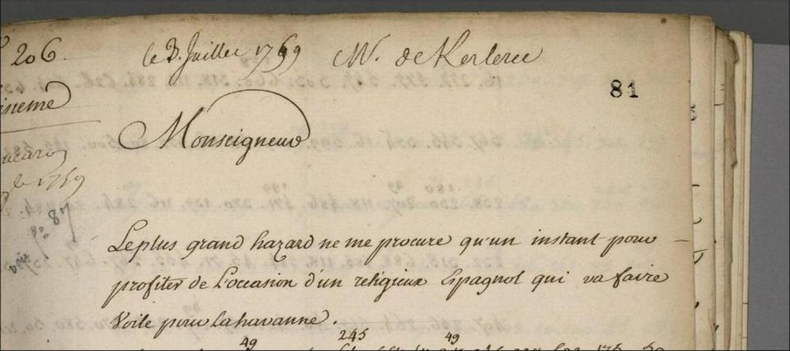
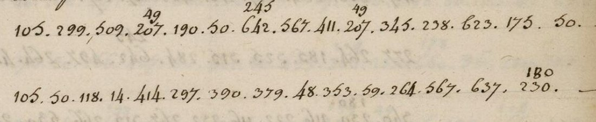
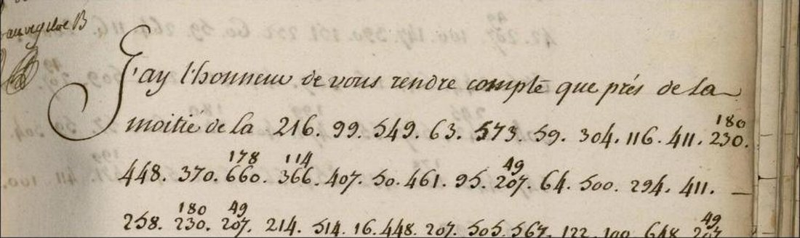

At a glanceKnown key applied · partial (1,065 of 1,068 legible groups; 717 of 744 words unmarked)
- The letters
- Louis Billouart de Kerlérec, governor of Louisiana, to the Minister of the Marine (Berryer), New Orleans: no. 206 of 3 July 1759, the coded passage of no. 207 of 13 July, and no. 215 of 17 September.
- Where
- Archives nationales d’outre-mer, COL C13A 41 ff. 81r–82r, 97r–97v and 111r–111v, in the ANOM viewer. Not on DECODE.
- The cipher
- Kerlérec’s two-part numerical nomenclator of 1755–1762: about 700 numbers for letters, syllables, words and names, with two numbers for nine common letters.
- How it was deciphered
- With a key taken from the ministry clerks’ interlinear decipherments of two other despatches, segmented and completed with Donald E. Pusch’s printed code book (2008). A test written in advance on held-out pages gave 96% against shuffled keys at 17.8% at most.
- What they say
- “L’étendart de la révolte et de l’indépendance est audacieusement déployé”: the governor names the ordonnateur Rochemore’s party, asks for a frigate and Swiss troops, reports the Balize with two cannon left, and the Choctaw resolved to take English traders.
- Still open
- At least 27 groups lost in the binding of the versos; three codes with no value anywhere (107, 209, 591); about a fifth of the groups rest on Pusch’s values alone.
- Credit
- The Marine ministry’s clerks, whose decipherments of nos. 194 and 228 give the key; Donald E. Pusch, who rebuilt the code book and summarised two of these despatches in 2008. Transcription, key pairs, test and translation contributed by Andrew Beling, with AI agents.
01 What the despatches say
Kerlérec sent most of his reports in clear and put into cipher what he feared others would read. When a coded despatch reached Versailles a clerk of the Marine wrote the plaintext between the lines; three of the despatches of 1759 never received that treatment, and no period plaintext of them is known. Donald E. Pusch, who rebuilt the code book in 2008, wrote that it made it possible to decode them (p. 468; on his own decoded versions, p. 466) but printed no text of them; he summarised two of them: no. 206 as devoted to Rochemore and his supporters and asking for their recall, sent by a Spanish priest bound for Havana; no. 207 as reporting the Balize stripped of all but two cannon kept for signals, its commander directed to abandon it if attacked (Louisiana History 49, pp. 474–475). He quoted no French, and showed no. 215 only as a picture of its first coded lines (p. 465). The texts below are given in full here for the first time. Square brackets mark restorations; words resting on Pusch’s values alone are listed after each despatch.

No. 206, 3 July 1759
“Toutes mes précédentes vous ont annoncé tout ce qui arrive aujourd’huy : l’étendart de la révolte et de l’indépendance est audacieusement déployé par les menées sourdes d’une infâme cabale dont je vous ai fait le détail, à la tête de laquelle sont les sieurs de Rochemore, Estrenan, trésorier, la famille du sieur Belile, major, composée de son gendre d’Orville, aide-major, Grondel, capitaine suisse, des sieurs d’Erneville, d’Autrive, capitaines, Mandeville et autres” (All my previous letters have told you what is happening today: the standard of revolt and independence is boldly raised by the underhand intrigues of an infamous cabal, … at whose head are Messrs de Rochemore, Estrenan the treasurer, the family of the major Belile, …). The cipher spells the treasurer “Estrenan”; that he is the treasurer Destréhan is our identification, as are Belle-Isle for “Belile” and d’Hauterive for “d’Autrive”.
The “horrors” just done to him “seroient impossibles en chiffre”, for the friar sails within the hour. He asks for “une forte frégate et 300 [?] troupes suisses, avec les ordres les plus sévères au gouverneur de vous renvoyer les re[be]lles” to be punished with long years of prison; reports that “Monsieur Volant est furieux contre le [si]eur Grondel” but kept the peace with him “pour épargner le sang”; asks that the minister’s despatches be handed to the governor in person; and says that no goods for the Indian trade are arriving: “Il ne faut pas être [107] de voir sous trois mois des révolutions bien fâcheuses de leur part” (One must not be [surprised?] to see within three months very unfortunate upheavals on their part).
Resting on Pusch’s values alone: infâme cabale, indépendance, forte frégate, troupes, the -ville of d’Orville, d’Erneville and Mandeville, the che of Rochemore. Belile, Grondel, d’Autrive, Estrenan, suisse and révolte are spelled from the clerks’ values alone.

No. 207, 13 July 1759, the coded passage
The despatch is in clear except for this passage. The officers had demanded that the chevalier de Villiers, “qu’enseigne en pied”, be replaced at the Balize by a captain; Kerlérec reports telling them that the post once “défendoit directement l’entrée du fleuve”, but “qu’à présent il étoit à peine bon pour un Enseigne, puisqu’il étoit absolument hors de portée de battre l’entrée du fleuve par le changement survenu de son cours ; que lorsqu’il la protégeoit il y avoit trente et quelques canons, et qu’aujourd’huy il y en avoit deux, tant bons que mauvais, pour répondre aux signaux des bâtiments ; et qu’enfin mes ordres étoient d’évacuer ce poste sans difficulté à [la] vue d’un certain nombre d’ennemis” (it was now hardly fit for an ensign, being quite out of range to cover the river mouth because the river’s course had changed; it once had thirty-odd cannon and now had two, good and bad, to answer ships’ signals; and my orders were to evacuate the post without difficulty at the sight of a certain number of enemies). Resting on Pusch’s values alone: évacuer, ordres, canon, tant bons que mauvais.
No. 215, 17 September 1759
The opening is in clear: “J’ay l’honneur de vous rendre compte que près de la moitié de la”; the cipher goes on: “nation chactas est totalement déterminée à recevoir chez elle des traiteurs anglois” (the Choctaw nation is wholly resolved to receive English traders). More than two years of effort to close the passage through the Alabama nations have failed for want of trade goods; the commandants of Tombecbé and the Alabamas report the traders on the march; “il est très à craindre” that they will set warriors on the French, a war “que nous ne sommes nullement en état de soutenir faute de marchandises”. “Il […] nous manque près de neuf cens hommes pour être au complet de 2000. Quant aux poudres de guerre nous sommes au moment d’en manquer totalement”, and he ends: “[Voi]là une situation bien accablante pour un gouverneur.” Resting on Pusch’s values alone: traiteurs, hommes, poudre, guerre, grand danger.

02 History and significance
What the despatches say is given above in Kerlérec’s words. What the references establish follows here, with its sources; our inference is marked as such.
The governor and the ordonnateur. Kerlérec, a naval officer born at Quimper in 1704, was commissioned governor of Louisiana in 1752 (Dictionary of Louisiana Biography, “Kerlerec”). Vincent de Rochemore, who had served in the Marine ministry from 1731, was sent to Louisiana as commissaire-ordonnateur in 1758; the two fell into a struggle that, the same dictionary says, crippled the colony’s civil government (“Rochemore”, “Kerlerec”). In 1759 the seizure of the Dutch ship Texel and of the Rhode Island flag-of-truce schooner Trois-Frères, taken at the Balize on 13 June, set Rochemore’s party against the governor; officers including d’Erneville, Grondel, d’Hauterive and d’Orville signed a protest and asked for the Balize command; Grondel, a captain of the Swiss troops, was at odds with his colonel Volant; the major, Simarre de Belle-Isle, sided with Rochemore (Villiers du Terrage 1904, pp. 92–100). A feuille au Roi of 9 October 1759 listed the men Kerlérec complained of, among them Rochemore, Belle-Isle, Destréhan, d’Erneville, d’Orville and Mandeville, with penalties approved, Rochemore among them dismissed (Villiers, pp. 140–141); in 1762 Belle-Isle and d’Erneville were cashiered and Kerlérec sent Bossu, Grandchamp, Grondel, Rocheblave, Broutin, Mandeville and d’Hauterive back to France (Villiers, pp. 140–142). Rochemore was recalled in 1762; the inquiry into the rivalry became known as “the Louisiana affair”, and he died before the proceedings closed in 1769. Kerlérec, recalled in 1763, was held in the Bastille on Rochemore’s charges, exiled from Paris in 1769, cleared in 1770 and died in Paris on 8 September 1770 (Dictionary of Louisiana Biography).
Goods, the Choctaw and the war. Louisiana held its Indian alliances with trade goods sent from France, and the war at sea cut the supply: between 1757 and 1762 the Marine lost fifty-six ships of the line and frigates to the British, and supply ships bound for Louisiana were taken (Pusch, p. 464). In March 1759, according to Malartic’s journal, Kerlérec wrote to Vaudreuil that he had received no goods from France the year before and would have been at a loss with the Indians had he not found some through Spain and New England; Fort Duquesne had been burned and abandoned, and a despatch from the Illinois dated 30 August 1759, which reached New Orleans only at the end of December, reported the French defeat near Niagara (Villiers, pp. 102–106). News of the fall of Québec (18 September 1759) reached Louisiana only on 4 August 1760 (Villiers, p. 112).
The Balize. The post at the mouth of the Mississippi had been left behind by the river: in a letter quoted by Villiers, Kerlérec wrote that the island of the Balize, once a league offshore, was now a league and a half inland and the post useless, and asked for a floating post instead (Villiers, p. 47).
The end of French Louisiana. By the treaty of Fontainebleau of 3 November 1762 France ceded Louisiana to Spain; the definitive treaty of Paris followed on 10 February 1763 (Villiers, pp. 154–156).
Our inference. The “horrors” of no. 206 are most probably the June events of the Trois-Frères affair and the officers’ protest, and no. 207’s Balize passage is Kerlérec’s answer to their demand for that command. The names in no. 206 largely match Villiers’s cast; he also names Reggio and Trent, who are not in the decode, and seems to make d’Orville Reggio’s son-in-law, where the cipher makes him Belle-Isle’s. Whether the October 1759 list drew on no. 206 cannot be told: no. 206 is a third copy whose other copies are not found, and Kerlérec named the same men in clear letters. What the despatches add is the governor’s own coded account of the summer of 1759, from 3 July to 17 September: the cabal named man by man, the troops he wanted, a defenceless river mouth, and the Choctaw slipping away for want of goods, the last of them written the day before Québec fell.
03 The code and its key
Kerlérec used one code from 1755 to 1762 (Pusch, pp. 469–470): numbers up to about 700 for letters, syllables, words and names, in no alphabetical order, with two numbers for each of nine common letters, which the code clerk usually wrote one above the other. On the despatches the ministry deciphered, the clerk wrote the plaintext over each line. Two of them were transcribed here with their glosses: no. 194 of 6 May 1759 (C13A 41 ff. 51r–52v) and no. 228 of 12 June 1760 (C13A 42 f. 48r), 492 groups. The running gloss was cut into a word or syllable for each group by an aligner that used Pusch’s table as its dictionary, so this key is not independent of his: 452 pairs, 164 codes, each with folio and line (key/key_manuscript.tsv, key/pairs_build.tsv). Against his table, 156 codes agree, five are spelling variants, two differ and one is new. For codes with no clerk’s pair the decoding uses 124 of Pusch’s values, listed with their pages (key/pusch_values_used.tsv); his full table is not reproduced. About a fifth of the groups of the three despatches (220 of 1,068) rest on his values alone.
The test was written down and hashed, and the keys frozen, before the held-out pages (no. 228, ff. 48v–49r) were transcribed. With the merged key 243 of 253 groups decode to the clerk’s word (96.0%); 200 keys with the same values shuffled over the codes reached 17.8% at most. The key from the clerks’ glosses alone gave 78.3% (shuffles at most 24.1%). Pusch built his table from all the glossed despatches, no. 228 among them, so the merged key is not independent of the test pages. Villiers (p. 108) prints the ministry’s plaintext of the same held-out lines, and it agrees with the gloss as transcribed here. The repository’s statistical validation of the reading passes.
04 How it was done
- The three despatches were found bare on the images of C13A 41 in the ANOM viewer (images 0162–0164, 0194–0195, 0222–0223) and read from enlarged crops.
- Each was transcribed twice, the second pass from the last line of each page upward with different crops. The passes disagreed on one group in 1,068, settled on the image (215, f. 111r: 647, not 642).
- The glossed despatches nos. 194 and 228 were transcribed with their clerk’s plaintext, the pairs built and compared with Pusch’s table, and the held-out test run as planned.
- The despatches were decoded with the key, built into French sentences and translated. About ten groups the code clerk miswrote in 1759 (a wrong, doubled or dropped digit, a doubled group, a mismatched stacked pair) were restored from the sense and are listed in
readings/DOUBTS.md. - Both volumes, C13A 41 (1,010 views) and C13A 42 (638 views), were paged for other copies of these despatches and other coded passages. None was found; the bare code at C13A 42 ff. 42–47 is the first copy of no. 228, deciphered in its second copy.
- A second AI agent of the contributor, not shown the readings, confirmed 30 of 30 key pairs and 42 of 42 sampled groups on the captures and reran the test with the same numbers; its corrections are applied. No person has checked the readings against the images.
05 What remains uncertain
- Groups lost in the binding at the line ends of the versos: at least 18 on f. 81v (no. 206), 2 on f. 97v (no. 207), 7 on f. 111v (no. 215). No second copy was found; the Library of Congress microfilm of the Louisiana Colonial Records Project (reel 48) or the leaves themselves would restore them.
- Three codes in no. 206 with no value in the clerks’ pairs or in Pusch’s table: 107 (context suggests surpris), 209 (ô[teroient]) and 591 (retour or bord). They are left as holes.
- The group written 300 at the end of no. 206 f. 81v l. 8 may be a plain numeral (300 Swiss troops) or a code group; numerals and codes cannot be told apart by their form in this series.
- 577 in no. 206 decodes as façon, which does not fit; sauvage et libre on f. 82r is unclear.
- About a fifth of the groups rest on Pusch’s values alone; without them the frigate request, indépendance, évacuer, poudre and traiteurs do not read.
- Not read: Hervé Gourmelon, Le Chevalier de Kerlérec (2003; 2nd ed. 2004), which may summarise these despatches.
06 Sources
- Archives nationales d’outre-mer, COL C13A 41 (1759), viewer: no. 194, ff. 51r–52v (images 0102–0105); no. 206, ff. 81r–82r (0162–0164); no. 207, ff. 97r–97v (0194–0195); no. 215, ff. 111r–111v (0222–0223). COL C13A 42 (1760): no. 228, ff. 42–47 (first copy) and ff. 48–53 (second copy, glossed), images 0085–0108.
- Donald E. Pusch, “Kerlérec’s Cipher: The Code Book of Louisiana’s Last French Governor”, Louisiana History 49 (2008), pp. 463–480 (JSTOR 25478601).
- Marc de Villiers du Terrage, Les dernières années de la Louisiane française (Paris, 1904), Internet Archive.
- Dictionary of Louisiana Biography, Louisiana Historical Association: “Kerlerec, Louis Billouart de” and “Rochemore, Vincent Gaspard Pierre de”, lahistory.org.
- Mississippi Provincial Archives: French Dominion, vol. 5 (1984), calendar of documents, p. 9: for 1759 it lists only Kerlérec’s letter of 6 May.
Transcriptions (both passes and the reconciled text), the key pairs, the test plan and results, the readings and translations are in targets/kerlerec1759/.